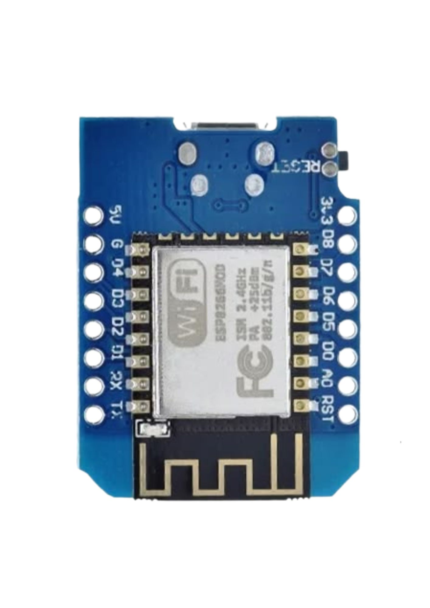

Teknologi Air Untuk Lingkungan Lebih Aman
FLOWS-PRO atau Flood Level Observation & Warning System merupakan sistem monitoring berbasis Internet of Things yang dirancang untuk membantu pemantauan ketinggian air dan memberikan informasi kondisi air secara realtime.
Sistem menggabungkan perangkat sensor, pengolahan data, konektivitas internet, penyimpanan data, serta dashboard monitoring sehingga kondisi air dapat dipantau dengan lebih mudah.
Satu Sistem Untuk Memantau Kondisi Air
FLOWS-PRO menghubungkan perangkat IoT, sensor, konektivitas internet, penyimpanan data, dan dashboard menjadi satu sistem pemantauan air yang terintegrasi.
Monitoring Realtime
Memantau ketinggian air secara realtime sehingga perubahan kondisi air dapat diketahui dengan cepat.
Data Historis
Data hasil pengukuran dapat tersimpan sehingga riwayat perubahan ketinggian air dapat dianalisis kembali.
Peta Lokasi
Menampilkan lokasi pemantauan sehingga informasi kondisi air dapat dikaitkan dengan lokasi sensor.
Peringatan Dini
Sistem memberikan informasi berdasarkan batas ketinggian air yang telah ditentukan.
Dari Sensor Air Hingga Dashboard
Perangkat FLOWS-PRO mengolah data sensor kemudian mengirimkannya ke sistem sehingga informasi kondisi air dapat dipantau melalui dashboard.

Bagaimana FLOWS-PRO Bekerja?
Setiap data dimulai dari sensor yang mengukur kondisi air, kemudian diproses dan dikirimkan hingga dapat dipantau melalui dashboard.
Pengukuran Air
Sensor mengukur jarak antara sensor dengan permukaan air.
Pengolahan Data
Wemos mengolah hasil pembacaan sensor menjadi informasi ketinggian air.
Pengiriman Data
Data dikirim melalui konektivitas internet menuju sistem cloud.
Penyimpanan Cloud
Data sensor disimpan sehingga riwayat kondisi air dapat digunakan kembali.
Dashboard
Informasi ketinggian air ditampilkan melalui dashboard FLOWS-PRO.
Peringatan Dini
Sistem memberikan informasi ketika kondisi air mencapai batas yang ditentukan.
Pantau Kondisi Air Secara Realtime
Dashboard FLOWS-PRO dirancang untuk menampilkan informasi ketinggian air, status sistem, kondisi sensor, dan riwayat pengukuran dalam satu tampilan.
Pantau Kondisi Air. Lebih Siap Menghadapi Risiko.
Akses dashboard FLOWS-PRO untuk melihat informasi ketinggian air, status sensor, data historis, dan informasi monitoring dalam satu sistem.